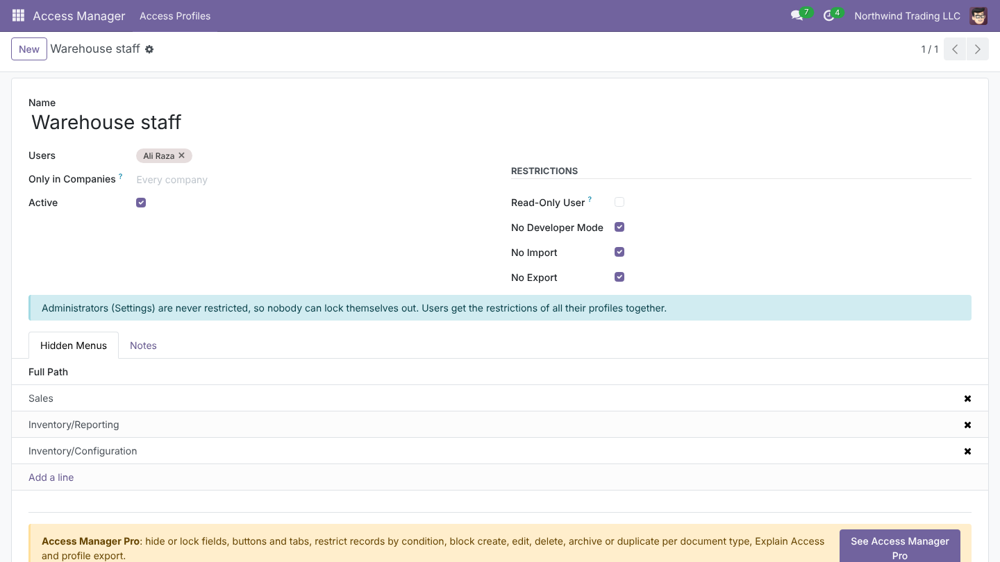
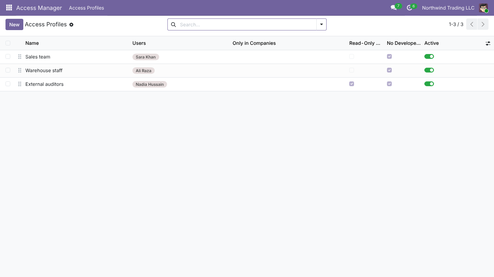
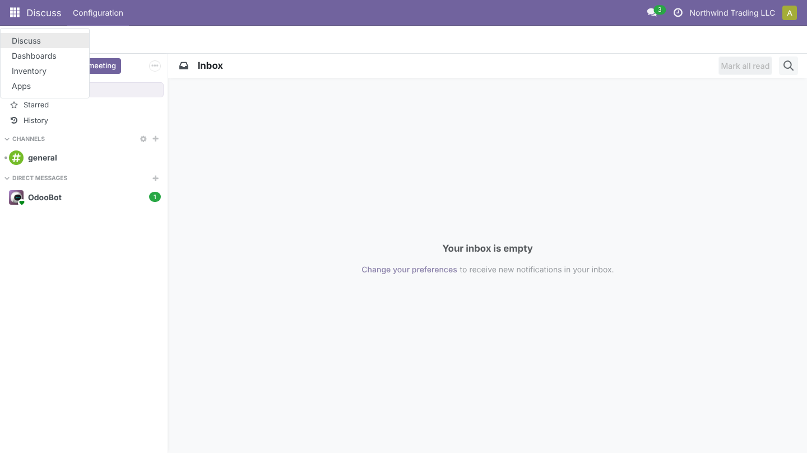
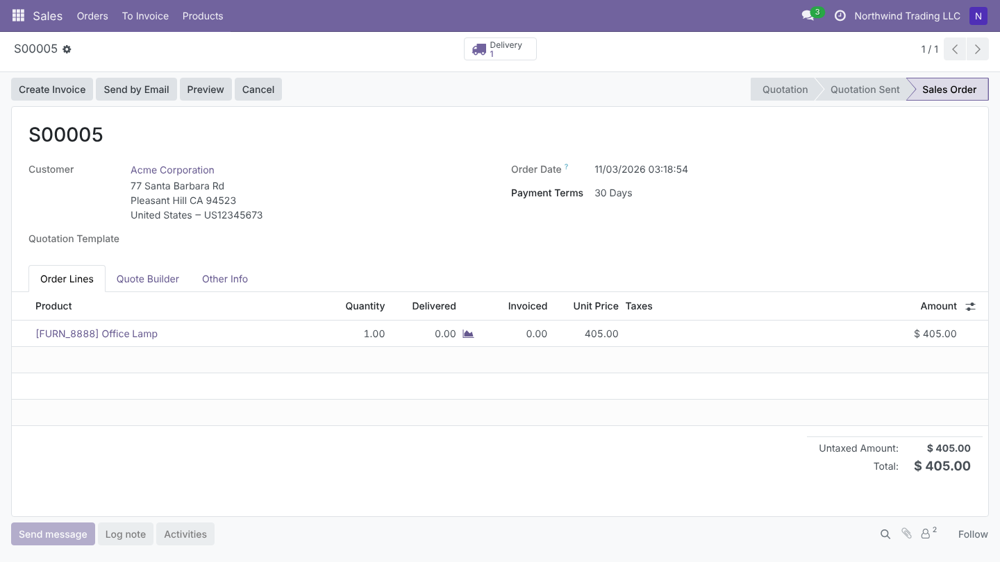
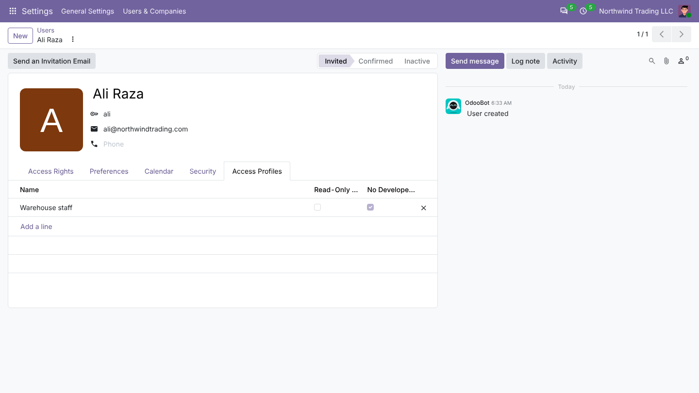

Hide menus per user, make auditors and managers read-only, and turn off developer mode, import and export. Group it in profiles, pick the users, done. Administrators are never locked out.

Apps and menus disappear for the users you choose.
Auditors and managers look without changing anything.
Enforced on the server. Administrators are never restricted.
Group your restrictions in profiles such as Sales team, Warehouse staff or External auditors, and pick the users. A user can have several profiles: restrictions add up.


Hide whole apps or single menus. Sub-menus go with them, so the screen stays simple and nobody wanders into configuration.
Read-only users see everything they are allowed to see, without New, Edit or Delete. The server refuses changes too, also through the API.


Each user form shows the profiles that apply. Administrators are never restricted, so nobody locks themselves out.
Fields, buttons and tabs, records by condition, chatter and filters, create, edit, delete, archive and duplicate per document type, reports and actions, sign-in blocking, Explain Access and profile export. One app, $299 once.
See Access Manager Pro| Access Manager | Access Manager Pro | |
|---|---|---|
| Access profiles per user, optionally per company | ||
| Hide menus and sub-menus | ||
| Read-only users | ||
| No developer mode, no import, no export | ||
| Administrators never locked out | ||
| Block create, edit, delete, archive, duplicate per document type | - | |
| Hide reports and actions | - | |
| Fields: hidden, read-only, required, no create, no link | - | |
| Records by condition (real Odoo record rules) | - | |
| Hide buttons and tabs, always or by condition | - | |
| Chatter rules: send message, log note, activities, followers | - | |
| Hide filters and group by | - | |
| Block sign-in | - | |
| Explain Access: every rule for a user, in one window | - | |
| Export and import profiles (works across upgrades) | - | |
| Price | Free | $299 once |
No. Administrators (Settings) are never restricted by profiles.
No. Read-only, import and export are refused by the server too, also through the API and AI connectors.
They get the restrictions of both.
Limit a profile to some companies; it applies only while the user works in them.
Fields, buttons and tabs, records by condition, chatter and filter rules, create, edit, delete, archive and duplicate per document type, reports and actions, Explain Access and profile export.
| Technical name | novator_access |
| Odoo version | Odoo 20.0 |
| Editions | Community & Enterprise |
| Hosting | Odoo.sh & On-Premise |
| Modules it depends on | base_setup, web |
| Python libraries | None |
| License | GNU Lesser General Public License v3 (LGPL-3) |
Setup questions, a rule that does not behave, or help setting up your profiles: write to us.
User guide: docs.novatorapps.com/access-manager support@novator.co www.novator.coNovator Technologies · Odoo Certified Partner
Installation, supported versions and release notes: docs.novatorapps.com/access-manager. Custom Odoo apps and integrations: novatorapps.com.